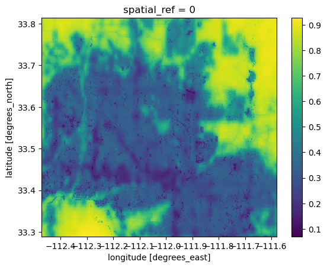
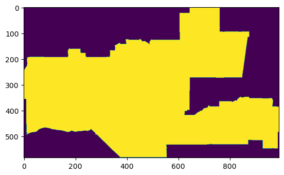
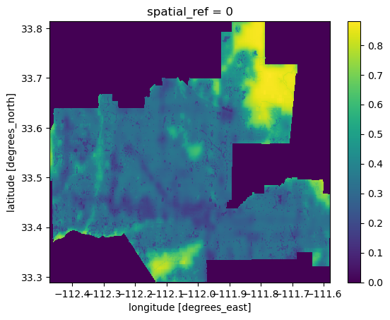
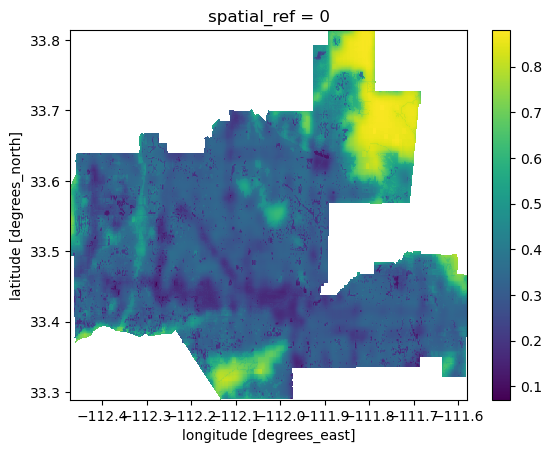
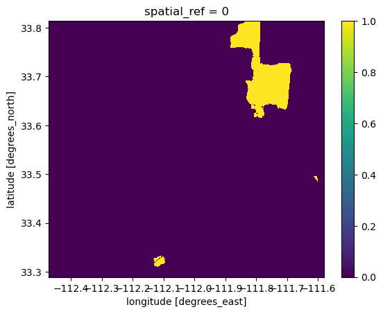

Biodiversity Intactness Index change in Phoenix subdivision
background
In 2021, Maricopa County, which encompasses the Phoenix metropolitan area, was the US county that added the most developed land since 2001 [1]. Urban sprawl creates pressure on biodiversity and natural areas. In this task you will explore a dataset showing values for a biodiversity intactness index (BII) [2, 3] to find changes in this BII around the Phoenix area from 2017 to 2020.
Instructions
Data access:
a: BII data: This dataset is part of the MPC STAC catalog. You will need to access the ‘io-biodiversity’ collection and look for the 2017 and 2020 rasters covering Phoenix subdivision. You can use the following coordinates for a bounding box: [-112.826843, 32.974108, -111.184387, 33.863574]
b: Phoenix subdivision: You will find the Phoenix subdivision polygon in the Census County Subdivision shapefiles for Arizona: https://www.census.gov/cgi-bin/geo/shapefiles/index.php?year=2022&layergroup=County+Subdivisions
Create a map showing the Phoenix subdivision within an appropriate geographical context. You may use any vector datasets to create your map. (You can also check out the contextily package.)
Calculate the percentage of area of the Phoenix subdivision with a BII of at least 0.75 in 2017. Obtain the same calculation for 2020. HINTS (useful or not depending on your workflow): Let x be an xarray.DataArray. We can select all the values greater than n by simply doing x>n. This will return an xarray.DataArray with boolean values. You can then transform this into an xarray.DataArray with 0s and 1s (instead of True/False) by casting it as type ‘int’. To calculate the percentage area: (pixels in class)/(total pixels) * 100.
Create a visualization showing the area with BII>=0.75 in 2017 that was lost by 2020. Here’s an example:
#calling in all the packages i might needimport numpy as npimport pandas as pdimport geopandas as gpdimport matplotlib.pyplot as pltimport xarray as xrimport rioxarray as rioxrfrom shapely.geometry import boxfrom rasterio.features import rasterize # for rasterizing polygonsfrom rasterio.features import shapesimport pystac_clientimport planetary_computerimport matplotlib.patches as mpatches # for creating legends# used to access STAC catalogsfrom pystac_client import Client# used to sign items from the MPC STAC catalogimport planetary_computerfrom shapely.geometry import Polygon# ----- other libraries for nice ouputsfrom IPython.display import Imagefrom geogif import gif # to create gif
#first going to call in arizona shapefile
ar = gpd.read_file('data/tl_2022_04_cousub.shp')ar.head()
STATEFP
COUNTYFP
COUSUBFP
COUSUBNS
GEOID
NAME
NAMELSAD
LSAD
CLASSFP
MTFCC
CNECTAFP
NECTAFP
NCTADVFP
FUNCSTAT
ALAND
AWATER
INTPTLAT
INTPTLON
geometry
0
04
005
91198
01934931
0400591198
Flagstaff
Flagstaff CCD
22
Z5
G4040
NaN
NaN
NaN
S
12231052883
44653332
+35.1066114
-111.3662497
POLYGON ((-112.13370 35.85596, -112.13368 35.8...
1
04
005
91838
01934953
0400591838
Kaibab Plateau
Kaibab Plateau CCD
22
Z5
G4040
NaN
NaN
NaN
S
7228864534
29327221
+36.5991097
-112.1368033
POLYGON ((-112.66039 36.53941, -112.66033 36.5...
2
04
005
91683
01934950
0400591683
Hualapai
Hualapai CCD
22
Z5
G4040
NaN
NaN
NaN
S
2342313339
3772690
+35.9271665
-113.1170408
POLYGON ((-113.35416 36.04097, -113.35416 36.0...
3
04
023
92295
01934961
0402392295
Nogales
Nogales CCD
22
Z5
G4040
NaN
NaN
NaN
S
1762322938
2382710
+31.4956020
-111.0171332
POLYGON ((-111.36692 31.52136, -111.36316 31.5...
4
04
023
92550
01934966
0402392550
Patagonia
Patagonia CCD
22
Z5
G4040
NaN
NaN
NaN
S
1439530300
685527
+31.5664619
-110.6410279
POLYGON ((-110.96273 31.68695, -110.96251 31.6...
#now justchanging crs to make sure it looks good on epsg 4326ar = ar.to_crs(4326)
ar.crs
<Geographic 2D CRS: EPSG:4326>
Name: WGS 84
Axis Info [ellipsoidal]:
- Lat[north]: Geodetic latitude (degree)
- Lon[east]: Geodetic longitude (degree)
Area of Use:
- name: World.
- bounds: (-180.0, -90.0, 180.0, 90.0)
Datum: World Geodetic System 1984 ensemble
- Ellipsoid: WGS 84
- Prime Meridian: Greenwich
#info and bio, ask yutian if we need background info for thisbio_collection = catalog.get_child('io-biodiversity')bio_collection
CollectionClient: io-biodiversity
id: io-biodiversity
title: Biodiversity Intactness
description: Generated by [Impact Observatory](https://www.impactobservatory.com/), in collaboration with [Vizzuality](https://www.vizzuality.com/), these datasets estimate terrestrial Biodiversity Intactness as 100-meter gridded maps for the years 2017-2020. Maps depicting the intactness of global biodiversity have become a critical tool for spatial planning and management, monitoring the extent of biodiversity across Earth, and identifying critical remaining intact habitat. Yet, these maps are often years out of date by the time they are available to scientists and policy-makers. The datasets in this STAC Collection build on past studies that map Biodiversity Intactness using the [PREDICTS database](https://onlinelibrary.wiley.com/doi/full/10.1002/ece3.2579) of spatially referenced observations of biodiversity across 32,000 sites from over 750 studies. The approach differs from previous work by modeling the relationship between observed biodiversity metrics and contemporary, global, geospatial layers of human pressures, with the intention of providing a high resolution monitoring product into the future. Biodiversity intactness is estimated as a combination of two metrics: Abundance, the quantity of individuals, and Compositional Similarity, how similar the composition of species is to an intact baseline. Linear mixed effects models are fit to estimate the predictive capacity of spatial datasets of human pressures on each of these metrics and project results spatially across the globe. These methods, as well as comparisons to other leading datasets and guidance on interpreting results, are further explained in a methods [white paper](https://ai4edatasetspublicassets.blob.core.windows.net/assets/pdfs/io-biodiversity/Biodiversity_Intactness_whitepaper.pdf) entitled “Global 100m Projections of Biodiversity Intactness for the years 2017-2020.” All years are available under a Creative Commons BY-4.0 license.
# Since there is only one band, we want to squeeze and remove both for 2017 and 2020, since it will just be in the way# remove length 1 dimension (band)az_17 = az_17.squeeze().drop('band')az_20 = az_20.squeeze().drop('band')
# But i have to remember that I want this clipped, so that the raster will show up quickeraz_17 = az_17.rio.clip_box(*phoenix.total_bounds)az_20 = az_20.rio.clip_box(*phoenix.total_bounds)
az_17.plot()
<matplotlib.collections.QuadMesh at 0x7281653a69d0>

az_20.plot()
<matplotlib.collections.QuadMesh at 0x7281648cfb90>
Question 2
#now I want to make a map of Arizona in geographical contextfig, ax = plt.subplots()az_17.plot(ax = ax, cmap ='Greens' )phoenix.plot(ax = ax, color ='none', edgecolor ='red' )#title and make it prettier!
#make a mask firstimport xarray as xrimport rioxarray as rioxr# create raster mask based on polygonphoenix_mask = rasterize(shapes = [phoenix.loc[10, 'geometry']], # a list of geometries out_shape = az_20.shape, # shape of outout np array (shape of raster) transform = az_20.rio.transform(), # transformation of raster ## change CRS and drop and squeeze# original dimensions and coordinates all_touched =True)
#view that my mask worked outplt.imshow(phoenix_mask)
<matplotlib.image.AxesImage at 0x7281653e2cd0>

#going to apply my mask to my raster nowphoenix_bii_20 = az_20 * phoenix_maskphoenix_bii_17 = az_17 * phoenix_mask
phoenix_bii_20.plot()
<matplotlib.collections.QuadMesh at 0x72816483a410>
phoenix_bii_17.plot()
<matplotlib.collections.QuadMesh at 0x7281645b4190>

#Just going to remove the noise outside the raster data that i dont wantphoenix_bii_20 = phoenix_bii_20.where(phoenix_bii_20 !=0)phoenix_bii_20.plot()
<matplotlib.collections.QuadMesh at 0x728164691590>
#same process with 2017phoenix_bii_17 = phoenix_bii_17.where(phoenix_bii_17 !=0)phoenix_bii_17.plot()
<matplotlib.collections.QuadMesh at 0x728164574810>

#now calculating where the BII is above 75 for 2020phoenix_bii_2020=phoenix_bii_20 >=.75phoenix_bii_2020.plot()
<matplotlib.collections.QuadMesh at 0x7281644023d0>

#same for 2017phoenix_bii_2017=phoenix_bii_17 >=.75phoenix_bii_2017.plot()
<matplotlib.collections.QuadMesh at 0x728164313110>
#percentage area for 2020 and 2017: first need to convert boolean to intphoenix_bii_2020 = phoenix_bii_2020.astype('int64')phoenix_bii_2017 = phoenix_bii_2017.astype('int64')
#now finding the percentage here#(pixels in class)/(total pixels) * 100Phoenix_bii_2020_per = (phoenix_bii_2020.sum().item()/phoenix_mask.sum().item()) *100Phoenix_bii_2017_per = (phoenix_bii_2017.sum().item()/phoenix_mask.sum().item()) *100print(Phoenix_bii_2017_per)print(Phoenix_bii_2020_per)
7.1168424110981645
6.483516806019822
#subtracting to find the differencePhoenix_bii_2020_per - Phoenix_bii_2017_per